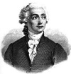

Fizikçi ve kimyager Antoine-Laurent Lavoisier (1743–1794), 18. yy’ın en göze çarpan Fransız bilim adamlarından biriydi. Hidrojen ve oksijen elementlerini bulmuştur. Kütle korunumu yasasının keşfi ve metrik sistemin oluşturulması ile ün kazanmıştır.

Ne var ki Lavoiser aynı zamanda halk tarafından çok da sevilmeyen Kral 16. Louis (1754-1793) ile çalışma hatasına düşmüştür. Monarşinin Fransız Devrimi ile yıkılmasının ardından ünlü bilim adamı yakalanmış, vatan hainliği ile suçlanmış ve başı kesilmiştir. Bir arkadaşı olan Joseph-Louis Lagrange (1736–1813) idamının ardından şu sözleri söylemiştir: “Başını kesmek sadece bir an sürdü. Oysa onun gibi birisinin yeniden dünyaya gelmesi belki yüzyıl sonra bile mümkün olmayacak.”
Lavoiser zengin bir ailenin çocuğu olarak Paris’te doğmuştu. Sorbonne’da eğitim gördü. Hukuk bölümünden mezun oldu. Ancak babasının isteğine karşı gelerek hukuku bıraktı. 1760’lardan itibaren kimya çalışmaya başladı. Daha sonraları kral adına gümrük vergileri toplayan özel bir vergi firmasına girdi. Fransa’nın önde gelen vergi tahsildarlarından birinin on üç yaşındaki kızı ile evlendi.
Fransız hükümeti, kimyagerlere büyük değer veriyordu. Lavoiser 1775 yılında Kraliyet Barut ve Güherçile Yönetimi’ne alındı. Görevlerinden biri de Fransa’nın Amerikan Devrimi’ne kolonilerin safında katılmasının ardından Benjamin Franklin (1706–1790) ile birlikte kolonilere güherçile sevkini idare etmekti.
Bu arada deneylerine devam etti. 1779 yılında oksijeni, 1783 yılında hidrojeni buldu. Her iki elementi de o isimlendirdi. 1789 yılında ilk kimya ders kitabı olarak kabul edilen Elementary Treatise on Chemistry’yi (Yeni Başlayanlar İçin Kimya) yayınladı. Kitap ilk dönem buluşlarını özetliyor ve aynı zaman kütle korunumu yasasını da açıklıyordu. Bu yasa kimyasal reaksiyonlarda toplam kütlenin hep aynı kaldığı düşüncesi üzerine temellendirilmişti.
Krala olan hizmetleri ve bir vergi tahsildarı olması nedeniyle 1789 yılındaki Fransız Devrimi’nin ve 1793 yılında kralın idamının ardından Lavoiser gözden düştü. Bilimsel saygınlığı sayesinde bir yıl daha hayatta kalabildi. Ancak 8 Mayıs 1794 tarihinde diğer kimyagerlerin karşı çıkmasına rağmen tutuklandı, yargılandı, mahkum edildi ve giyotine gönderildi. Bunların hepsi sadece bir gün sürmüştü. İdam edildiğinde sadece elli yaşındaydı.
Ek Bilgiler
1- Lavoiser 1768 yılında yaptığı bir dizi deneyde bazı salyangoz türlerinin başının kesildikten sonra yeniden büyüdüğünü keşfetmiştir. Bu deneyde, Fransızların salyangozlara ve baş kesmeye olan merakı ironik bir biçimde bir araya gelmişti!
2- Lavoiser oksijen ve hidrojen kelimelerini Yunanca’da asit-biçimlendirici ve su-biçimlendirici anlamına gelen terimleri kullanarak türetmişti. Oksi asit, hidro su anlamına gelmektedir.
3- Fransız hükümeti Lavoiser’in idamının üzerinden iki yıl geçmeden mahkumiyet kararını bozmuş ve dul eşinden özür dilemiştir.